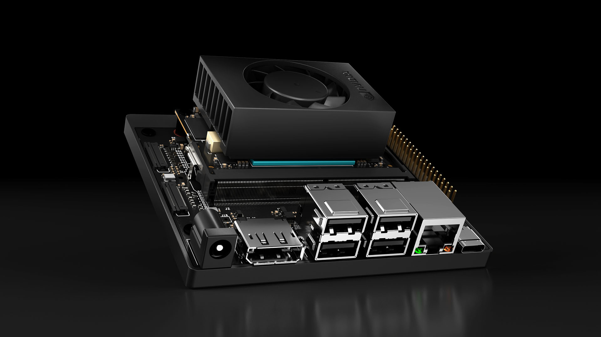
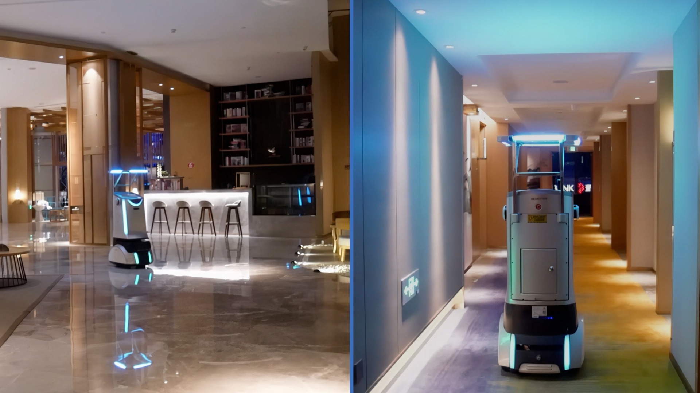
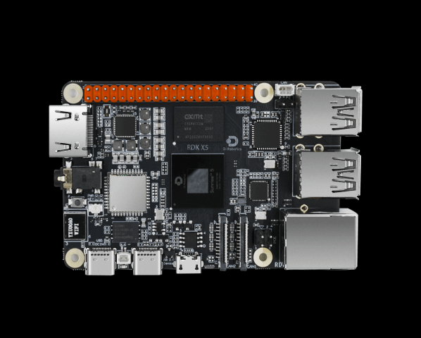

Orin / Thor / J6P / A2000 / Kria — 谁能同时覆盖 Transformer 推理 + 运动控制?
摘要: 具身智能对端侧 SoC 提出了前所未有的三层并行需求：Transformer 级推理（≥100 TOPS）、硬实时运动控制（<1ms 确定性延迟）和多模态传感器融合。本页对比了 NVIDIA Orin/Thor、高通 RB3 Gen2/RB5、地平线 J6P、黑芝麻 A2000、AMD Kria 等 14 款芯片平台，发现当前没有任何单一 SoC 能完美覆盖全部三层。业界主流方案仍为 Orin + 外挂 MCU 的异构分层架构。NVIDIA Thor（2000 TOPS + Transformer Engine + Safety Island）是最接近"真正具身 SoC"的候选，地平线 J6P 凭借 560 TOPS + ASIL-D Safety Island 成为国产最有潜力的替代路径。GR00T N1 基础模型的发布进一步锁定了 NVIDIA 在软硬协同生态上的领先地位。

14 款芯片横跨四个生态——NVIDIA 系（Orin/Thor）、高通系（RB3 Gen2/RB5/X Elite）、国产系（地平线 J6P/J6E、地瓜 RDK X5/X3、黑芝麻 A1000/A2000）、FPGA 系（AMD Kria）。下表列出机器人场景最相关的 8 款。
| 平台 | 算力 (INT8) | 功耗 | CPU | 硬实时 MCU | 目标场景 |
|---|---|---|---|---|---|
| Jetson AGX Orin | 275 TOPS (稀疏) | 15-60W | 12×A78AE | ✅ Cortex-R5 | 当前主力机器人推理 |
| Jetson Thor (预计) | 2000 TOPS (稀疏) | >100W | Grace (Neoverse V2) | ✅ Safety Island (ASIL-D) | 下一代人形机器人 |
| 高通 RB5 (QRB5165) | 15 TOPS | ~10-25W | 8×Kryo 585 | ⚠️ 无专用 MCU | 低功耗机器人/无人机 |
| 高通 RB3 Gen2 (QCS6490) | 12.5 TOPS | ~5-15W | 8×Kryo 770 | ⚠️ 无专用 MCU | IoT/轻量机器人 |
| 地平线 J6P | 560 TOPS | ~30W | ARM (BPU Nash) | ✅ Safety Island (ASIL-D) | 自动驾驶→机器人 |
| 黑芝麻 A2000 | 256 TOPS | ~45W | 12×A78AE + R5 | ✅ Safety Island (ASIL-D) | 高端自动驾驶 |
| AMD Kria KR260 | 可配置 (FPGA) | 10-25W | 4×A53 + 2×R5F | ✅✅ R5F 最强硬实时 | 运动控制+定制加速 |
| 云端 A100/H100 | 624/1979 TOPS | 300-700W | 服务器 CPU | ❌ | 训练 + 云端推理 |
数据来源: NVIDIA/高通/地平线官方规格 + 多模型交叉校验 (2026.04)。稀疏 TOPS 通常是密集的 2×。未列入的 RK3588 (6 TOPS)、地瓜 RDK X5 (10 TOPS) 算力不足以运行 VLA。
基于 Jetson AGX Orin (275 TOPS, 64GB) 的实测/估算揭示了一个核心矛盾：VLA 的 1-5Hz 推理频率远低于力控任务所需的 50-100Hz。
| 模型类型 | 参数量 | Orin 推理延迟 | 频率 | 可行性 |
|---|---|---|---|---|
| Diffusion Policy (DP3) | ~50M | ~20ms | ~50Hz | ✅ 完全可行 |
| PocketDP3 (轻量化) | ~10M | ~5ms | ~200Hz | ✅ 实时 |
| Octo | 300M | ~100ms | ~10Hz | ✅ 可用 |
| OpenVLA (INT4 AWQ) | 7B | ~500ms-1s | 1-2Hz | ⚠️ 勉强 |
| pi0 / RT-2 级 | 55B | 无法加载 | — | ❌ 需云端 |
| GR00T N1 | 未公开 | 目标 <100ms | >10Hz | 🔄 Thor 优化中 |
业界对此有三种应对思路。ECHO (HKUST/LimX, 2026) 走云-端协同：云端 GPU 运行扩散模型（~1s 出一个动作序列），边侧 RL tracker 以 1kHz 执行，用 38 维紧凑动作表示桥接延迟。AC²-VLA (2026) 做自适应计算：简单动作跳过 Transformer 层/token，复杂动作完整计算，推理加速 2-4×。OneDP (NVIDIA/UT Austin) 走单步扩散：通过自蒸馏实现 10× 推理加速，GPU 上可达数百 Hz。PocketDP3 则从模型轻量化入手，专为边侧部署优化解码器。

NVIDIA Thor 是最接近"真正具身 SoC"的候选。相比 Orin 的 275 TOPS，Thor 提供 2000 TOPS（7× 提升），Blackwell Transformer Engine 原生支持 FP8 推理使 10B+ VLA 可端侧运行，Grace CPU (Neoverse V2) 提供强大通用算力，预计 100GB+ 统一内存可加载 GR00T N1 级模型。配合 GR00T N1 基础模型——NVIDIA 为人形机器人设计的多模态基础模型，融合多路视觉、语言指令和本体感觉直接输出全身关节动作——NVIDIA 正从"卖芯片"转向"卖芯片+模型+工具链"的全栈生态锁定：Isaac GR00T 平台将仿真训练、模型优化和 Thor 部署整合为端到端流水线。
地平线 J6P 是国产最有潜力的替代路径。原为高阶自动驾驶设计的旗舰 SoC，自研 BPU Nash 架构提供 560 TOPS，具备 ASIL-D 级 Safety Island 硬实时核心。理论上可同时承载感知推理和运动控制——硬件上已满足 FWM 三频率架构需求。关键挑战在于机器人工具链（编译器、运行时、ROS2 集成）的成熟度远落后于车端。RDK X5 开发者生态（基于征程6 系列的 Sunrise 5 芯片，10 TOPS）为开发者提供入门通道，社区活跃度在国产平台中领先，但量产级 J6P 机器人方案仍处于早期探索阶段。

高通 RB3 Gen2/RB5 走低功耗异构路线。Hexagon DSP 负责低功耗 AI 推理，Adreno GPU 提供通用计算，原生支持 Linux/ROS2。优势是超低功耗（RB3 Gen2 仅 5-15W）和丰富连接性（Wi-Fi 6E/蓝牙/5G），适合移动巡检机器人。局限是算力不足运行 VLA（7B+ 需 100+ TOPS），且缺乏专用硬实时 MCU。AMD Kria KR260 的 FPGA+ARM+R5F 组合在运动控制层最强（R5F 硬实时无出其右），但 FPGA 跑 Transformer 效率差、开发门槛极高。
当前有三种部署模式，各有适用场景。
多数团队采用模式 B 或训练时云端+部署时导出 ONNX 到 Orin（模式 A）。Unitree G1 标配 Orin，软件栈为 Isaac Lab (云端训练) → 导出 ONNX → Orin 推理。
真正的具身 SoC 需要同时具备三个能力层：(1) Transformer 推理——≥100 TOPS，能跑 1-7B VLA at ≥5Hz；(2) 硬实时运动控制——确定性延迟 <1ms，50-1000Hz 控制回路（需 MCU/Safety Island）；(3) 多模态传感器接口——多路 camera ISP + ADC（力/触觉）+ IMU + GPIO。
| 平台 | Transformer 推理 | 硬实时控制 | 机器人生态 | 综合评级 |
|---|---|---|---|---|
| Orin | ⚠️ 7B 仅 1-2Hz | ✅ R5 安全岛 | ★★★★★ Isaac/ROS2 | 当前最优，算力不足跑大 VLA |
| Thor | ✅ 2000 TOPS | ✅ Safety Island | ★★★★★ GR00T 原生 | 理想目标，未出货 |
| J6P | ✅ 560 TOPS | ✅ Safety Island | ★★ 适配中 | 国产最有潜力，生态在车端 |
| A2000 | ✅ 256 TOPS | ✅ Safety Island | ★ 几乎无 | 算力够但生态空白 |
| Kria KR260 | ❌ FPGA 效率差 | ✅✅ R5F 最强 | ★ 门槛极高 | 控制层最优，无 AI 能力 |
谁最可能做出第一款真正的具身 SoC？ NVIDIA Thor 可能性最高——Grace+Blackwell+Safety Island 三合一，GR00T 生态绑定，2000 TOPS 碾压级算力。地平线 J6P/J7 紧随其后——560 TOPS + Safety Island + 自研 BPU 已有实时路径，车端→机器人自然迁移，国产自主可控。高通如果推出集成 DSP 实时核+更强 NPU 的 RB7 也有机会，5G 集成是独特优势。黑芝麻 A2000 硬件齐备但机器人生态从零起步。AMD Kria 理论完美但开发门槛太高。
业界实际做法：异构双芯分层。方案 D（Orin + MCU）是当前主流——Orin 运行 VLA/视觉/规划（10-30Hz），通过 EtherCAT/CAN/SPI 连接外挂 STM32/ESP32 做力控/电机伺服（1kHz 硬实时）。Orin 虽有 R5 安全岛，但多数团队仍用外挂 MCU 做电机控制。方案 E（J6P + 内置 Safety Island）理论上可不需外挂 MCU，但机器人工具链不成熟、BPU 对 Transformer 支持待验证。
| 频率层 | 需求 | 当前最优 | 理想具身 SoC |
|---|---|---|---|
| 语义层 1-5Hz (VLA/LLM) | ≥100 TOPS, Transformer | Thor / 云端 | 集成 Transformer Engine |
| 规划层 10-30Hz (FWM) | ~50 TOPS, SSM/Mamba | Orin 可胜任 | 集成 SSM 加速器 |
| 执行层 100-1000Hz (力控) | 硬实时 <1ms | 外挂 MCU / Kria FPGA | 集成 Safety MCU + ADC |
底线：在 Thor 出货之前，力觉世界模型的 MVP 部署方案只能是 Orin + 外挂 MCU。J6P 如果机器人工具链成熟化，是国产替代 Orin 的最强候选——560 TOPS + Safety Island 硬件上已满足 FWM 三频率架构的需求。